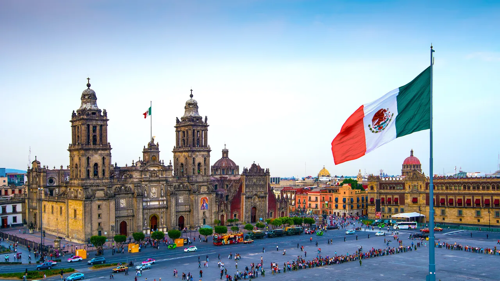
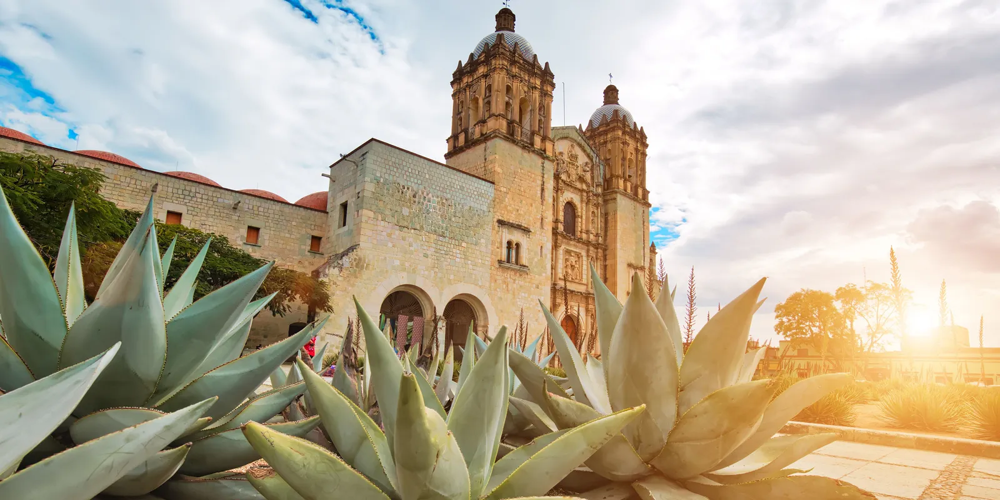
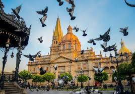
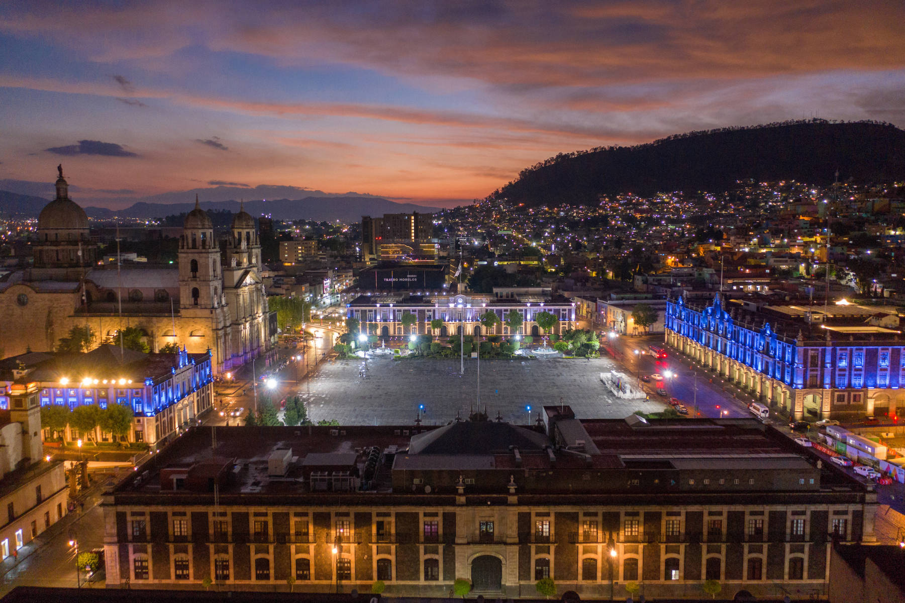

Ciudad de México
La Ciudad de México es el corazón cultural y político del país, ofreciendo una rica historia, museos de clase mundial, y el famoso Zócalo.
Oaxaca
Oaxaca es conocido por su herencia indígena, rica gastronomía, y sitios arqueológicos como Monte Albán.
Jalisco
Jalisco, cuna del mariachi y el tequila, destaca por sus playas, como las de Puerto Vallarta, y su vibrante cultura.
Puebla
Puebla es famosa por su arquitectura colonial, la cocina poblana, y la impresionante pirámide de Cholula.

Quintana Roo
Quintana Roo es conocido por sus impresionantes playas en Cancún y la Riviera Maya, así como por sus sitios arqueológicos mayas.

Estado de México
El Estado de México alberga la majestuosa pirámide del Sol en Teotihuacán y bellos paisajes naturales.
Morelos
Morelos ofrece un clima cálido todo el año, con balnearios y la histórica ciudad de Cuernavaca.

Michoacán
Michoacán es famoso por sus festivales, arquitectura colonial, y la Reserva de la Biósfera de la Mariposa Monarca.